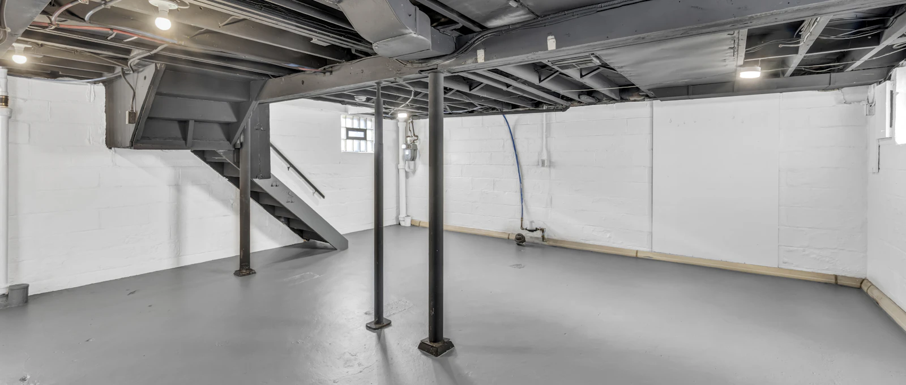

Au Québec, la pompe de puisard travaille le plus fort pendant deux semaines par année : la fonte des neiges. Et c'est précisément à ce moment que les pompes fatiguées lâchent. Le test qui suit prend 10 minutes — faites-le en mars, pas les pieds dans l'eau en avril.
- 1 Fosse de puisard — nettoyage annuel
- 2 Crépine d'aspiration
- 3 Flotteur : il doit monter librement
- 4 Clapet antiretour — le « clonc » à l'arrêt
- 5 Rejet à 2 m et plus des fondations
1Le test du seau d'eau
- Ouvrez le couvercle de la fosse de puisard (le bassin dans le plancher du sous-sol).
- Versez lentement un ou deux seaux d'eau jusqu'à ce que le flotteur monte.
- La pompe doit démarrer d'elle-même, évacuer l'eau rapidement, puis s'arrêter net une fois le niveau redescendu.
- Elle ne démarre pas? Vérifiez d'abord la prise et le disjoncteur. Toujours rien → étape « remplacement ».
- Elle tourne mais l'eau ne baisse pas? Crépine bloquée ou conduite d'évacuation gelée/obstruée → étape 2.
2Le nettoyage annuel de la fosse
- Débranchez la pompe avant d'y mettre les mains. Toujours.
- Retirez débris, gravier et boue du fond de la fosse — c'est ce qui bloque la crépine d'aspiration.
- Nettoyez la crépine (la grille sous la pompe) à la brosse.
- Vérifiez que le flotteur bouge librement sur toute sa course : un flotteur coincé contre la paroi est la panne la plus bête et la plus fréquente.
- Rebranchez et refaites le test du seau.
Écoutez le clapet Le « clonc » à l'arrêt de la pompe, c'est le clapet antiretour qui se ferme — il empêche l'eau évacuée de redescendre dans la fosse. Si la pompe redémarre sans cesse en cycles courts, le clapet est probablement défectueux : une pièce à ± 20 $ sur la conduite d'évacuation.
3Vérifiez la sortie d'évacuation dehors
- La conduite doit rejeter l'eau à au moins 2 mètres des fondations, jamais vers le drain français ni vers l'entrée du voisin (bonjour la patinoire).
- Au printemps, assurez-vous que la sortie n'est pas bloquée par la glace ou la neige — une conduite bouchée fait forcer la pompe jusqu'à la brûler.
- Plusieurs municipalités interdisent le rejet à l'égout sanitaire; vérifiez votre règlement local.
4Le talon d'Achille : la panne de courant
Les grosses pluies et les pannes d'Hydro arrivent ensemble — exactement quand la pompe est indispensable. Les protections, en ordre de sérieux :
- Pompe de secours à batterie : prend le relais automatiquement, autonomie de quelques heures à quelques jours. Le meilleur ami des sous-sols finis.
- Pompe d'appoint à pression d'eau (aqueduc requis) : aucune batterie, fonctionne tant qu'il y a de l'eau à l'aqueduc.
- Alarme de niveau d'eau (15-50 $) : ne pompe rien, mais vous réveille avant l'inondation. Les modèles wifi vous textent au chalet.
5Remplacer avant la panne
- Une pompe de puisard vit 7 à 10 ans. La vôtre a un âge inconnu? Considérez-la comme en fin de vie.
- Signes de fatigue : cycles de plus en plus longs, bruits de grincement, démarrages hésitants, rouille sur le corps de la pompe.
- Un remplacement planifié coûte le prix de la pompe et d'une heure de travail. Un sous-sol inondé coûte votre franchise d'assurance… et vos souvenirs dans les boîtes de carton.
De l'eau monte en ce moment? Ne marchez pas dans l'eau si des prises ou des appareils électriques y touchent — coupez le courant au panneau d'abord. Ensuite appelez-nous : on se déplace 24/7, fonte des neiges incluse.
Sous-sol à risque? Blindons-le.
Inspection, remplacement de pompe, système de secours à batterie : soumission gratuite avant la prochaine fonte.